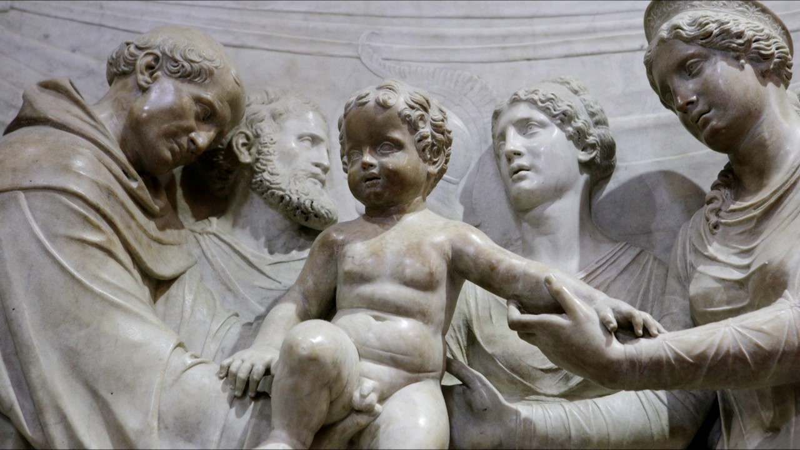
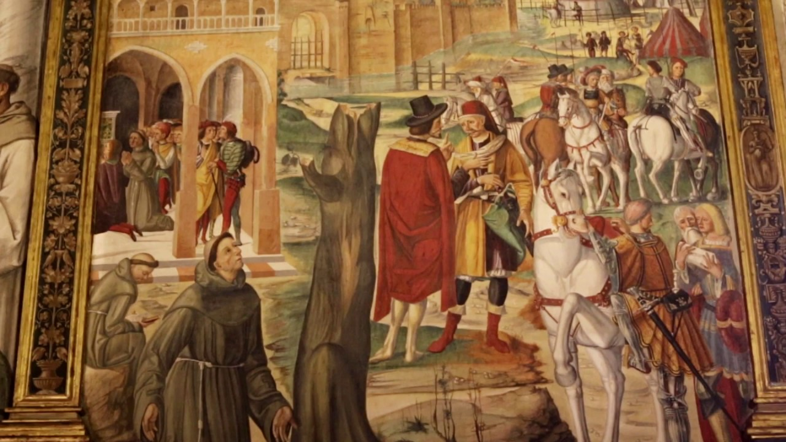

The Speaking Infant

A jealous nobleman doubted the legitimacy of his newborn son due to baseless rumors, despite his wife's
pleas of fidelity. In despair, the wife sought help from St. Anthony, who spoke at length with the
nobleman, dispelling his unfounded suspicions. When presented with the infant, Anthony miraculously made
the child identify his father. This intervention by St. Anthony mended the family and marriage, rescuing
them from the harm caused by gossip and slander.
The Liberation of Padua

A few years after St. Anthony's death, Ezzelino dominated the Veneto Region's main cities through force.
In 1254, Pope Innocent IV excommunicated Ezzelino and launched a crusade to free Padua from his rule.
The Blessed Luke Belludi sought St. Anthony's help, and the saint appeared to two friars, predicting
Padua's liberation in 1256. Ezzelino's forces were ousted, and the city's citizens were finally free,
their prayers answered through St. Anthony's intercession.
The Saint of Miracles

After St. Anthony's death in 1231, he was temporarily buried in a small church. His funeral drew
thousands of mourners who saw him as a father figure due to his faith and protection. During the
funeral, a woman named Cunizza, who had been suffering from a shoulder tumor for a year, miraculously
found healing at Anthony's tomb. This marked the first miracle at the site, leading to an influx of
people seeking solace and physical healing at St. Anthony's Tomb.